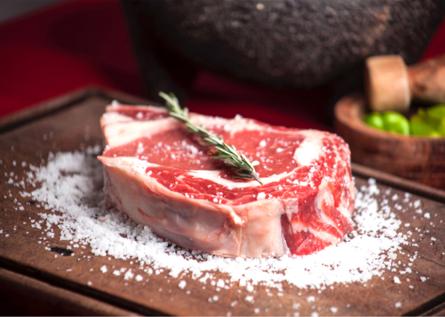
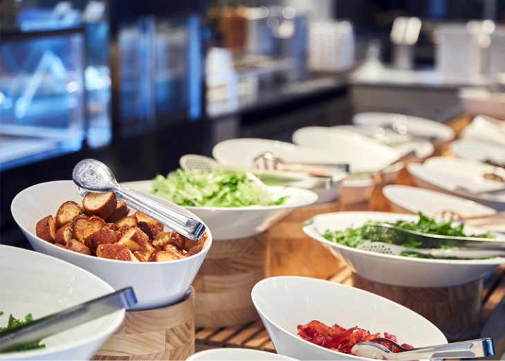
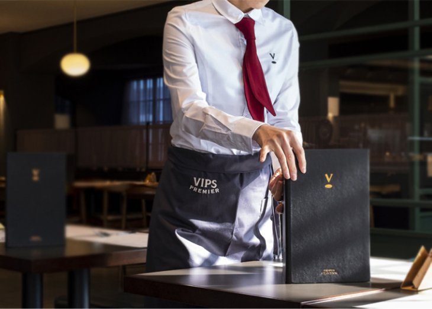

브랜드 스토리
빕스만의 특별한 스테이크를 맛볼 수 있는
My No.1 스테이크하우스, 빕스
엄선된 쇠고기를 다양하고 차별화된 조리방식으로 즐길 수 있는 빕스만의 스테이크와
계절별로 신선하고 풍성한 샐러드 바를 품격있고 세련된 분위기에서 즐길 수 있는 곳, 빕스!
소중한 사람들과 함께하는 고객님의 삶에 멋과 여유를 드리는 공간입니다.
고객님의 기대, 그 이상의 행복한 경험을 위한
빕스의 노력
My No.1 Steakhouse
01
빕스만의
다채로운 프리미엄 스테이크
2010년 말 빕스는 프리미엄 스테이크하우스로의 변신을 선포하고
까다로워지는 고객들의 입맛에 부응하기 위해 세계 각국의 스테이크
전문점을 탐방하며 정통 스테이크 맛의 구현을 위해 노력합니다.
브로일링, 팬 프라잉 등 다양한 조리법과 숙성방법을 개발해 왔으며,
다채로운 스테이크를 선보이고 있습니다.


02
차별화를 위한
다양한 시도와 진화
빕스의 샐러드 바는 지속적으로 2,000여 개의 메뉴를 선보이며
건강함과 신선함, 다양함을 추구하고 있습니다.
지금도 새로운 변화를 시도하며 진화하고 있으며,
매년 다양한 컨셉의 샐러드 바 메뉴를 선보이고 있습니다.
앞으로도 균형 있고 건강한 메뉴를 지속적으로 선보일 계획입니다.
03
최상의 서비스로
행복을 선사하는 빕스
빕스는 1997년 1호점인 등촌점을 오픈한 이래 고객님의 기대,
그 이상의 행복한 경험을 위해 항상 노력하고 있습니다.
늘 신선하고 새로운 맛, 활력 넘치는 즐거운 공간,
세심한 배려와 진심이 담긴 서비스로 국내는 물론 세계에서도
인정받는 빕스가 될 수 있도록 더욱 노력할 것입니다.
